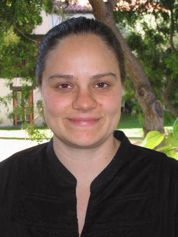
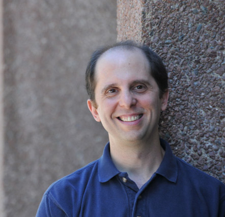
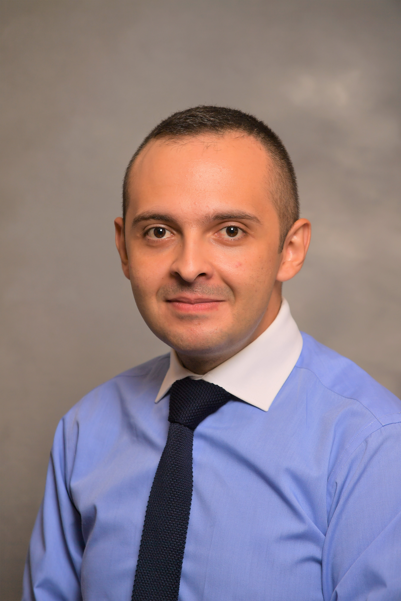
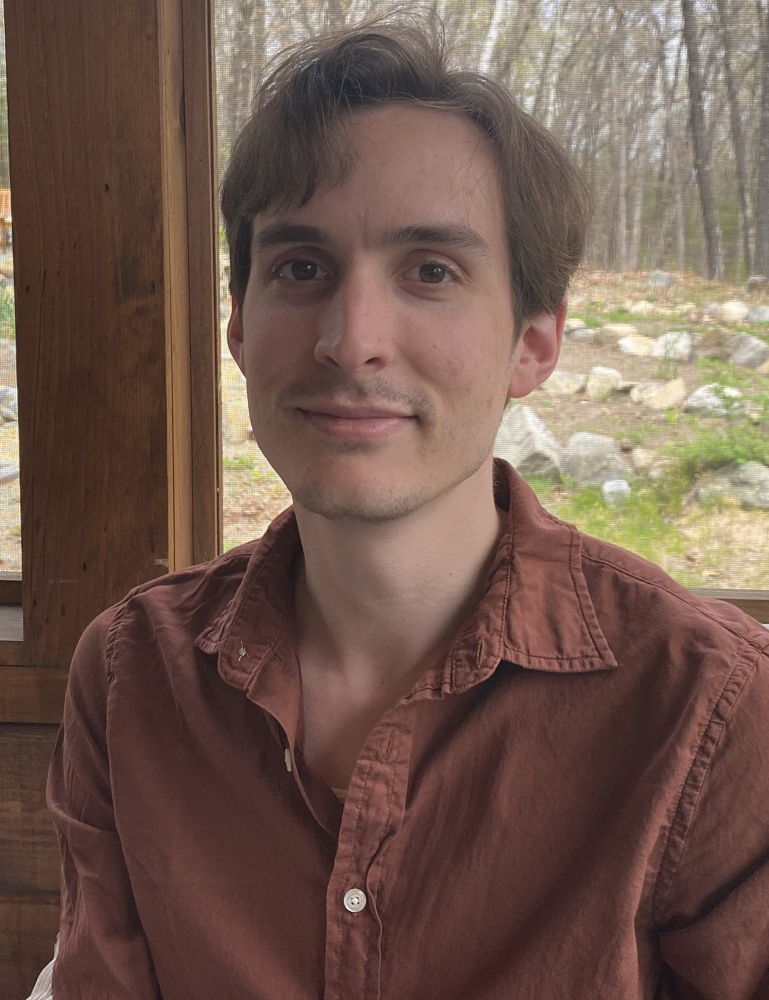
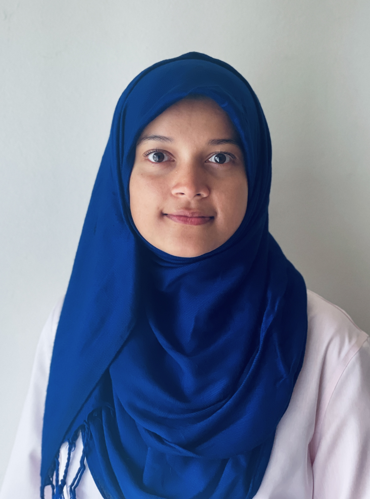
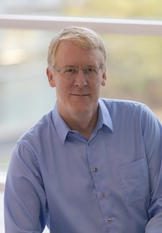
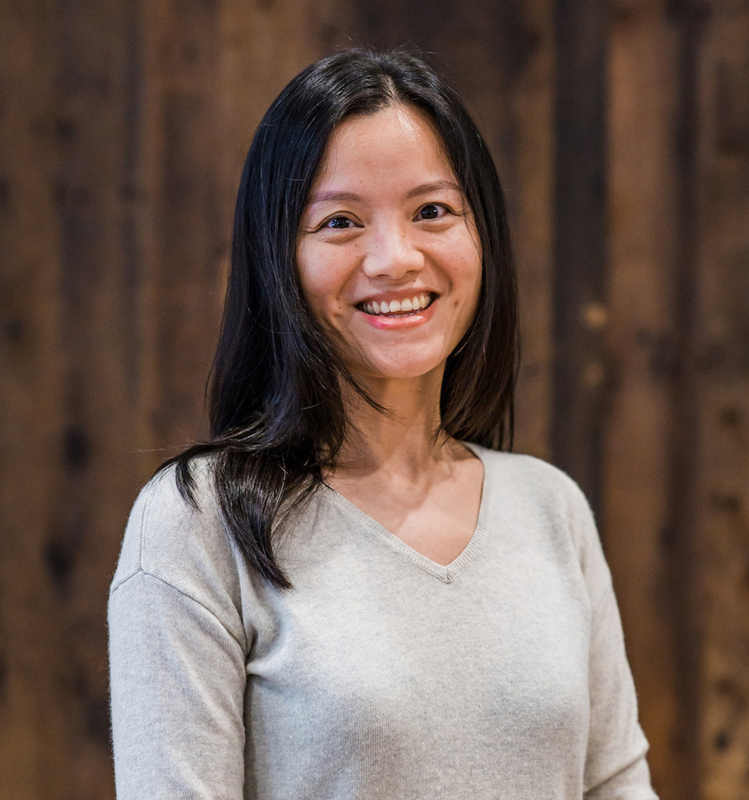
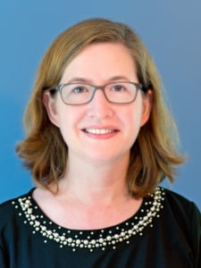
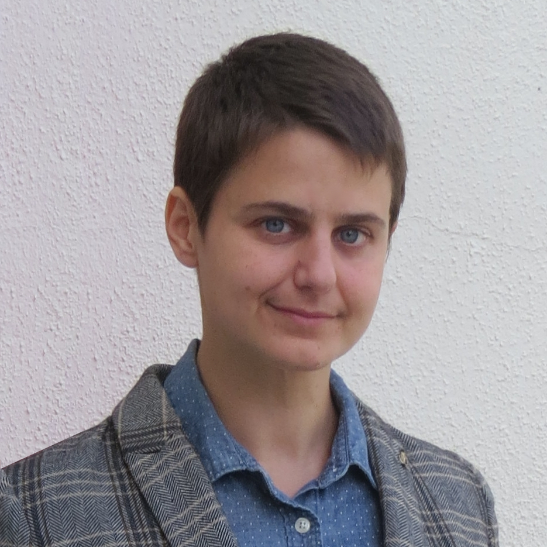

Computer Science Faculty and Staff
|
 Dr. Stephanie Taylor Associate Professor and Chair |
Stephanie Taylor started her academic life at Gordon College in Massachusetts as a double-major in math and computer science. She spent several years as a software engineer in Peabody, MA before she pursued her PhD in computer science at UC Santa Barbara. Her research was then and continues to be developing and analyzing computational methods to study biological clocks. She joined the CS department at Colby in the fall of 2008 and finds a lot of joy working with Colby students. |
 Dr. Eric Aaron Assistant Professor |
Eric Aaron majored in Mathematics at Princeton University, also studying Cognitive Science and Computer Science, before receiving his M.S. and Ph.D. in Computer Science from Cornell University. Focusing on interdisciplinary applications of computational modeling, his work is broadly interdisciplinary, bridging science, theory, and systems. His research has two areas of emphasis: intelligent robotics, including autonomous agent navigation, task sequencing, and graph theoretic analyses for robots in dynamic environments; and interdisciplinary computational science--spanning data acquisition, modeling, simulation, and data analysis--with application domains including tumor simulations, caterpillar crypsis, and mechanisms that extend existing evolutionary theory. |
 Dr. Naser Al Madi Assistant Professor |
Naser Al Madi’s research focuses on supporting source code reading and comprehension by modeling user behavior and eye movement during software development. He started his teaching career at Hamilton college, where he taught Operating Systems and Wearable Technology among other topics. He received his PhD from Kent State University, where he is a member of the Software Development Laboratory (SDML). His dissertation focuses on modeling eye movement control in reading source code, and his research interests include eye tracking, program comprehension, and reading models. nsalmadi@colby.edu |
 Dr. Max Bender Assistant Professor |
Max Bender went to our NESCAC friends at Connecticut College for his undergraduate years, where he majored in Computer Science, Mathematics, and Classics. Deciding to combine his passions in Computer Science and Mathematics, Max then went to the University of Pittsburgh for graduate school to study algorithms. Max primarily works in the realm of Online Approximation Algorithms with his dissertation focusing on Dynamic Pricing Problems, but more recently Max has been looking into applications of online approximation within Algorithmic Game Theory. |
 Dr. Tahiya Chowdhury Postdoctoral Fellow Davis Institute of Artificial Intelligence |
Tahiya Chowdhury received a Bachelor of Electrical Engineering from Bangladesh University of Engineering and Technology. She went to Rutgers University for graduate studies, where she received a Master of Science in Computer Engineering with a focus on usable privacy and human-computer interaction. During her Ph.D. in Computer Engineering at Rutgers University, she focused on designing data-driven intelligent tools to model human events on individual and city scale. Her recent research interests include human-centered design of ethical AI, public interest technology, and computer science education. |
 Dr. Stacy Doore Clare Boothe Luce Assistant Professor |
Stacy Doore began her journey as a computer scientist while receiving her M.S. and Ph.D. in Spatial Information Science and Engineering at the University of Maine. Before coming to Colby, she taught computer science for two years at Bowdoin College. Her technical research interests include digital information access, emerging assistive technologies, multimodal systems, and non-visual spatial language interfaces. She is also the principal investigator on several grants related to improving the teaching of computing ethics and equity in computer science education. Her technical and educational research is supported by NSF and the Mozilla Foundation and she serves as an external evaluator for programs related to increasing inclusion, equity, and accessibility in the STEM disciplines. |
 Dr. Allen Harper Assistant Professor |
Allen Harper began his academic at the University of Rhode Island where he completed his undergraduate degree in Geology. However, after studying Economics and Political Economy at URI and UMass Amherst, Allen ventured to NYC where he spent the next quarter of a century working on solutions to urban social problems. During that time Allen become interested in Computer Science and especially how humans interact with machines. This led to Allen’s dissertation on eye tracking and human task performance at City University of New York--Graduate Center. More recently, Allen has begun to study how eye tracking can be combined with virtual reality. |
Dr. Oliver Layton Assistant Professor |
Oliver Layton’s research focuses on how the brain controls behavior and informs the design of better technology. Specifically, he is fascinated by the brain mechanisms and strategies that allow people to effortlessly move through dynamic, complex scenarios, such as walking through Grand Central Station without colliding with people and flying drones through cluttered environments. Oliver is passionate about the liberal arts and interdisciplinary learning, having created a self-determined major in ‘Computational Neuroscience’ at Skidmore College to study the brain from a diversity of perspectives, including Computer Science, Neuroscience, Psychology, and Mathematics. He went onto graduate school at Boston University, where he became interested in human navigation and developed a large-scale, dynamic neural model that simulates how humans perceive their movement through realistic environments. After earning his Ph.D. in Cognitive and Neural Systems, he joined the Perception and Action Lab at Rensselaer Polytechnic Institute as a Postdoctoral Researcher to design virtual reality experiments to better understand human navigation and develop new models of the primate visual system. |
 Dr. Ying Li Associate Professor and Associate Chair |
Ying Li received a Bachelor of Engineering in Computer Science and Technology from Hubei University of Technology in China, where she continued her education and received a Master of Engineering in Applied Technology. She went on to the University of New Hampshire and received her Ph.D. in Computer Science there. Her research interests include efficient methods for resource-limited networks, reliable communication, performance analysis, intermittently connected networks, wireless sensor networks, and drone networks. |
 Dr. Amanda Stent Director, Davis Institute for AI and Professor |
Amanda Stent is the founding director of the Davis Institute for AI. She previously worked in industry at Bloomberg, Yahoo, AT&T Labs, and in academia at Stony Brook University as an associate professor of computer science. She holds a Ph.D. in Computer Science from the University of Rochester. |
 Dr. Hannen Wolfe Assistant Professor |
Hannen Wolfe went to Bennington College where they received a Bachelors of Arts in a self-designed major that integrated visual arts, computer science, and mathematics. While completing their PhD in Media Arts and Technology from University of California Santa Barbara, they received a Masters of Science in Computer Science. Their research interests include human robot interaction, affective computing, virtual reality, and computational creativity. Their artwork focuses on the relationship between body and technology, giving computers and robots biological qualities. |
|
Kim Caswell Administrative Secretary |